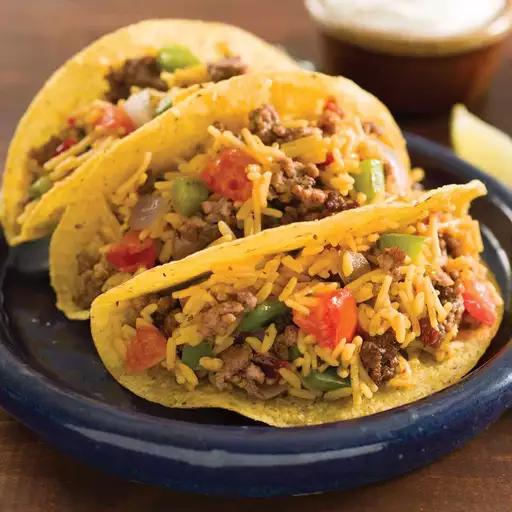
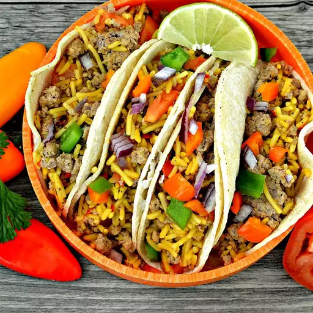

Mexican Rice & beef tacos
These beef and rice tacos with bell peppers and onions are quick and easy —
just what you need after a busy day. Top with your favorite taco toppings such as sour cream,
chopped red onion, and shredded lettuce and serve with lime wedges on the side.

Ingredients
Original recipe (1X) yields 4 servings
- 2 tablespoons I Can't Believe It's Not Butter!® Spread, divided
- 1 pound lean ground beef
- salt and ground black pepper to taste (Optional)
- 1 medium green or red bell pepper, chopped
- 1 medium red onion, chopped
- two cups of water
- 1 (5.4 ounce) package Knorr® Fiesta Sides™ - Mexican Rice
- 1 medium tomato, chopped
- 8 taco shells
Directions
- Melt 1 tablespoon butter spread in large nonstick skillet over medium-high heat.
Add ground beef, season with salt and pepper, and cook until browned and crumbly,
5 to 7 minutes. Transfer to a bowl.
- Melt remaining 1 tablespoon butter spread in same skillet over medium-high heat.
Add bell pepper and onion and cook, stirring occasionally, until crisp-tender,
about 5 minutes.
- Stir in water, rice, and tomato; increase heat to high and bring to a boil.
Reduce heat, cover, and simmer until rice is tender, about 7 minutes.
Stir in beef and cook until heated through.
- Spoon beef and rice mixture into taco shells and serve.

Enjoy!